Celebrations in focus.
Real photographs from the DKs Photography portfolio: milestone celebrations, hospitality details, ceremonies and portraits.


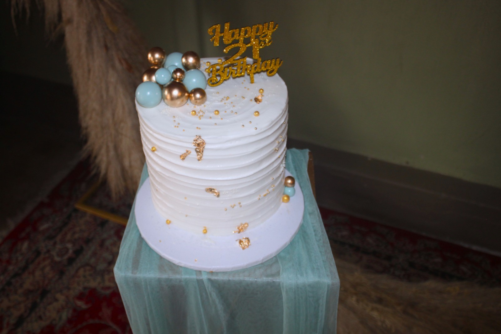
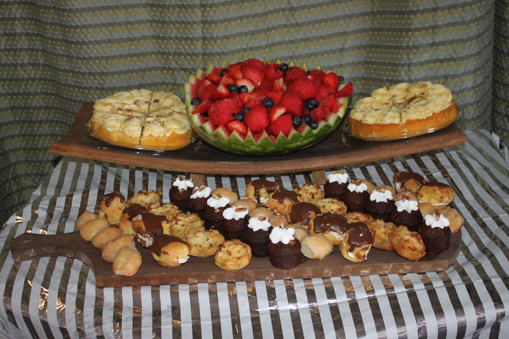
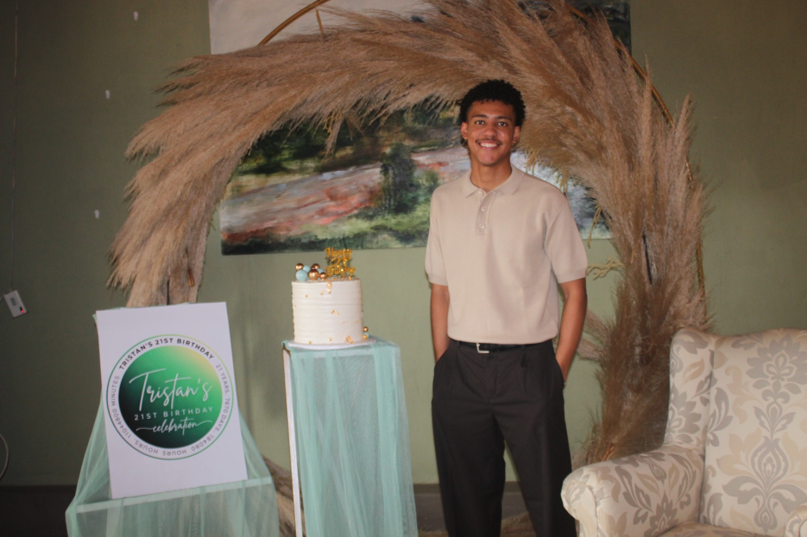
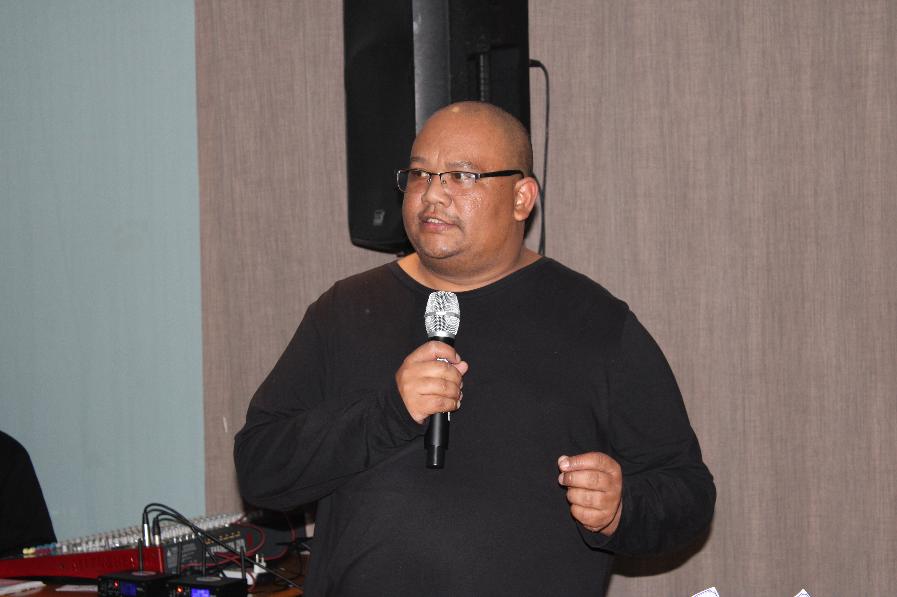
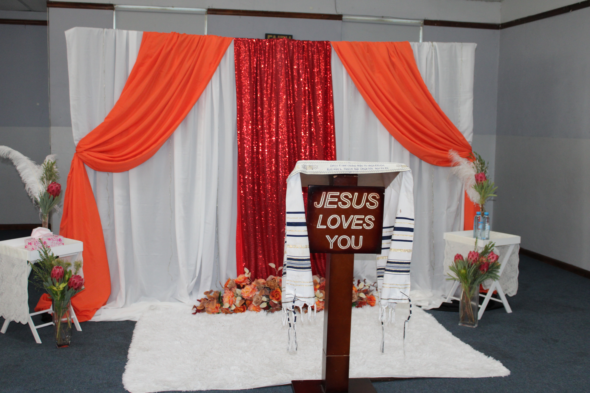
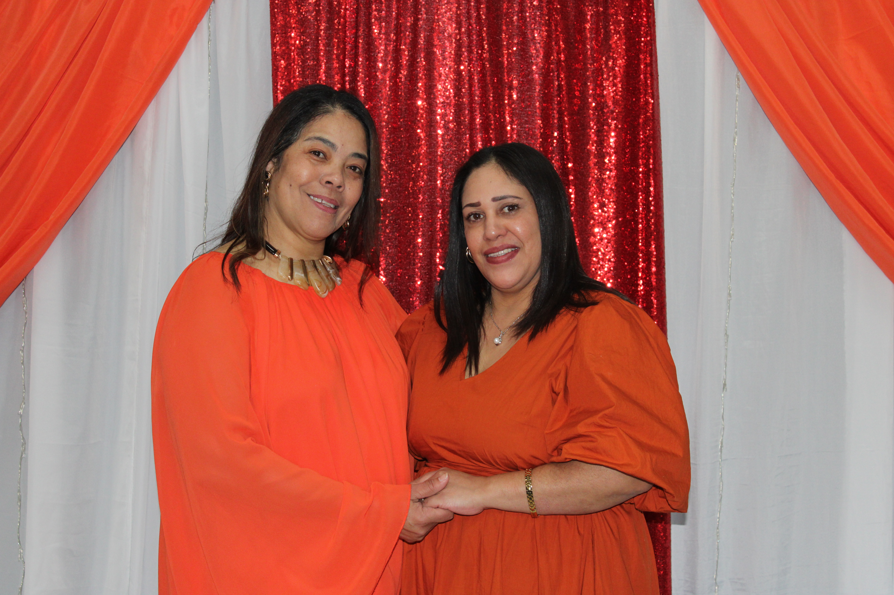
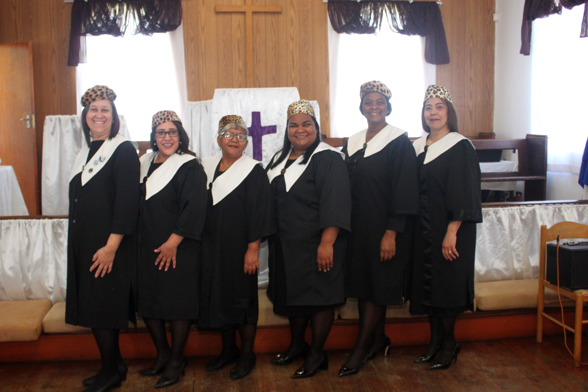
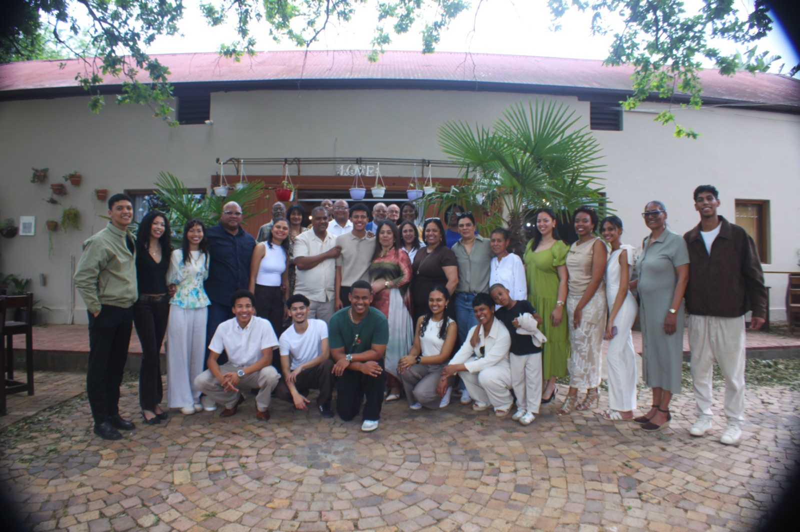
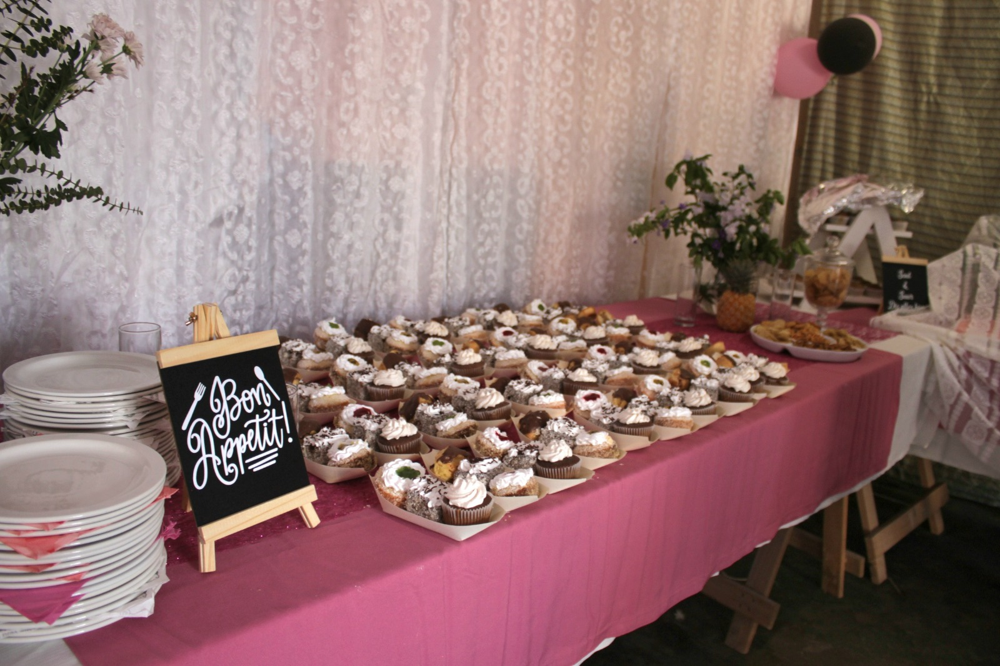
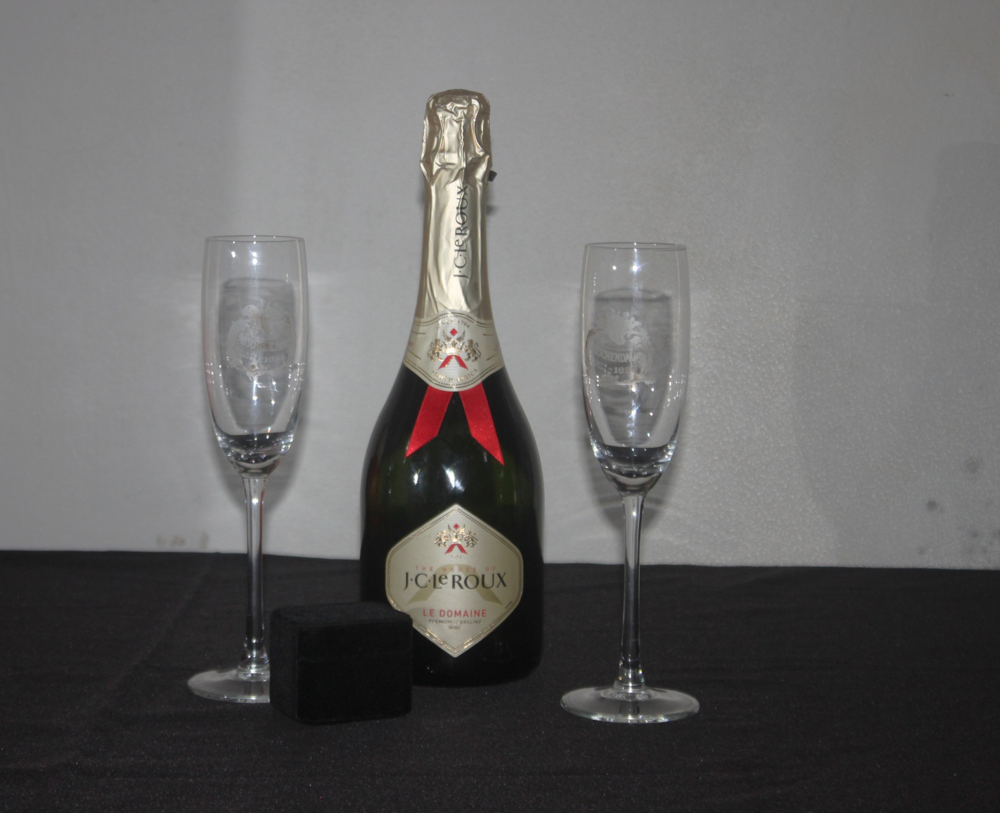
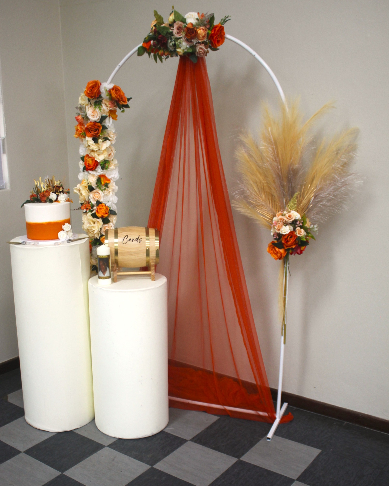

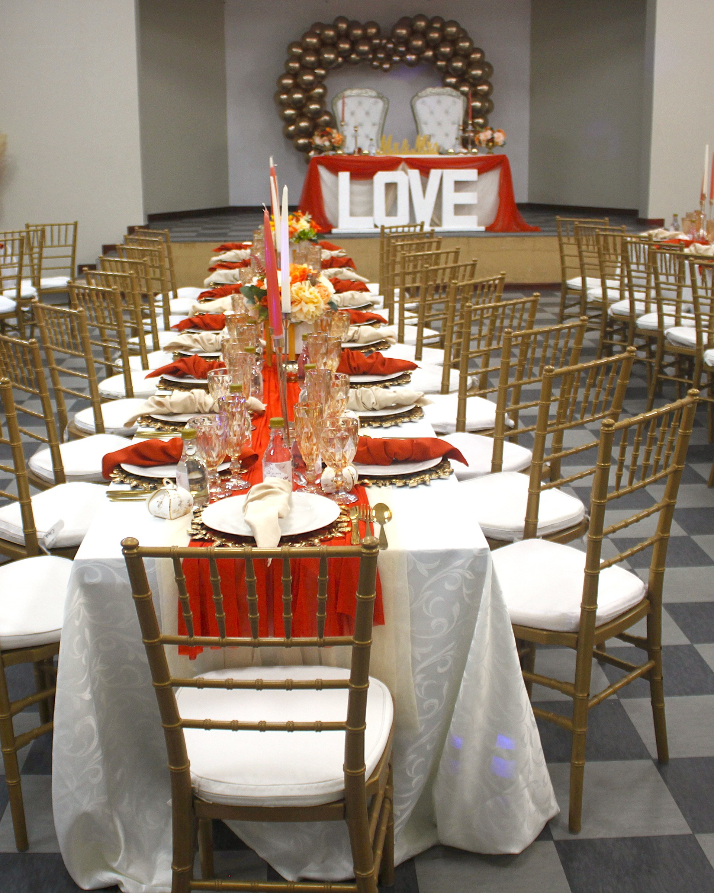
Behind the lens
I’m Dominick, the young entrepreneur behind DKs Photography, based in Stellenbosch. I’m goal-oriented and determined to build something meaningful through my creativity, dedication and love for photography.
I believe everything happens for a reason, and every picture tells its own story. For me, photography is about capturing the people, emotions and small details that make a moment worth remembering.
As I grow my business, my aim is to keep learning, give every client my best and create photographs that hold meaning long after the moment has passed.
Your experience matters.
Have we worked together? Share private feedback or give permission for a review to be considered for publication.
Share your experience